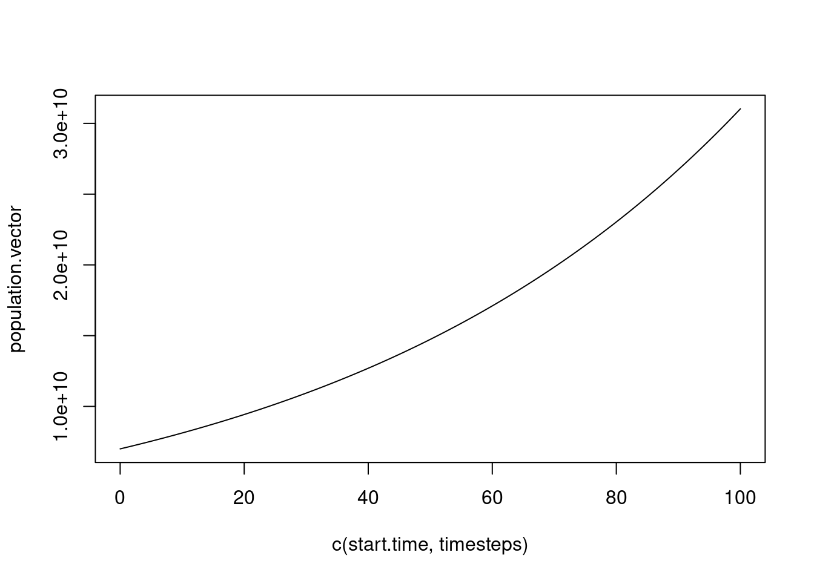

In this session you will make it easier to reuse your code by placing functions in separate files, so that they can be referred to directly without having to be copied and pasted from file to file – a potentially error-strewn pastime.
Breaking down the program into separate files is an important habit to get into. It makes the code less prone to error in the longer term and easier to debug because by creating independent units we are creating generic pieces of code that we can re-use over and over again in other programs. Not only is reusing code by copying and pasting code from one file to another inherently dangerous as you may accidentally copy the wrong piece of code, but if a mistake is identified at a later date there may be several places where the mistake has been copied to and you may not remember them all, causing avoidable mistakes further down the line.
We can turn the single program from the previous practical into two pieces of code by putting the step_simple_growth() function into a separate file, and reading that file in the original script using the source() function. We have called the new file containing the function 0103-step-simple-growth-function.R, so we will use the command:
source("0103-step-simple-growth-function.R")to tell the main script (the R program) that it needs to look in 0103-step-simple-growth-function.R for code.
The function documentation should be in the function file now and not in the main script, like this:
#' ### Function: step_simple_growth()
#' Run one step of a simple deterministic exponential growth model.
#'
#' Arguments:
#' - current.population -- the population count now
#' - growth.rate -- the growth rate
#'
#' Returns:
#' - the updated population count
#'
step_simple_growth <- function(current.population, growth.rate) {
# Calculate changes to population
new.additions <- growth.rate * current.population
# Calculate population at next timestep
next.population <- current.population + new.additions
# Return updated population
next.population
}
## Note, running a script with just a function in will not output anythingand the main script (0103-run-simple-growth.R) should look something like this:
Note that {learnr} doesn’t create files, so
sourcedoesn’t work here. To avoid an error, we commented out line 2, and instead preloaded 0103-step-simple-growth-function.R into the following code block)
step_simple_growth <- function(current.population, growth.rate) {
new.additions <- growth.rate * current.population
next.population <- current.population + new.additions
next.population
}# Load the step_simple_growth() function into the global environment (my workspace)
# Note this next line would be needed if you were running this in RStudio
# source("0103-step-simple-growth-function.R")
#' Set up the simulation parameters
#' --------------------------------
#' First we set up the parameters for the simulation.
# Set the growth rate
human.annual.growth <- 0.015
# Starting population size
initial.count <- 7000000000
# And setting times
start.time <- 0
end.time <- 100
#' Run the simplest possible simulation
#' ------------------------------------
#' Then run it so that we can get the output we need
# Set up the population starting size (at the first timestep)
population.vector <- initial.count
# The timesteps that the simulation will run through
timesteps <- seq(from = start.time + 1, to = end.time)
# Now we loop through the time itself (starting at the second timestep)
for (new.time in timesteps) {
# Calculate population at next timestep
updated.human.population <- step_simple_growth(current.population = tail(population.vector, 1),
growth.rate = human.annual.growth)
# Add new element onto end of population vector
population.vector <- c(population.vector, updated.human.population)
}
#' Plot the results
#' ----------------
#' And finally we output the results.
# Now we can plot the timesteps against the population vector
plot(c(start.time, timesteps), population.vector, type = "l")
When we run the code, we don’t even need to open the file 0103-step-simple-growth-function.R, we just run the main script (0103-run-simple-growth.R) making sure that we have specified 0103-step-simple-growth-function.R as asource() in it. Its contents (the step_simple_growth() function) are safely packaged away unless we want to edit them. 0103-run-simple-growth.R and 0103-step-simple-growth-function.R together do exactly what 0102-growth-functional.R did.